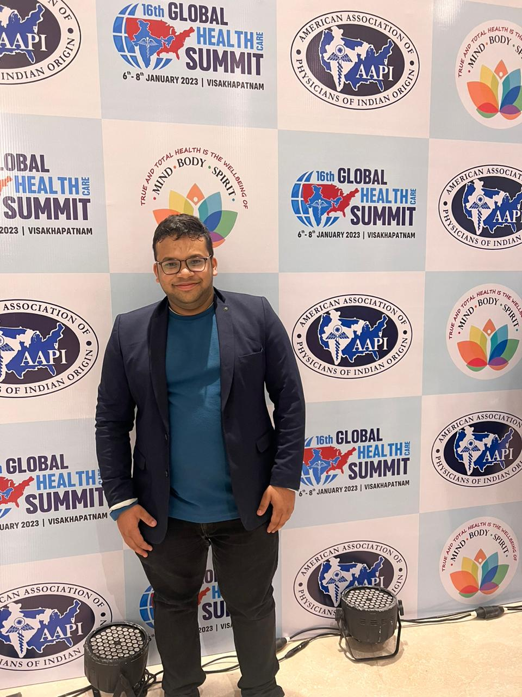
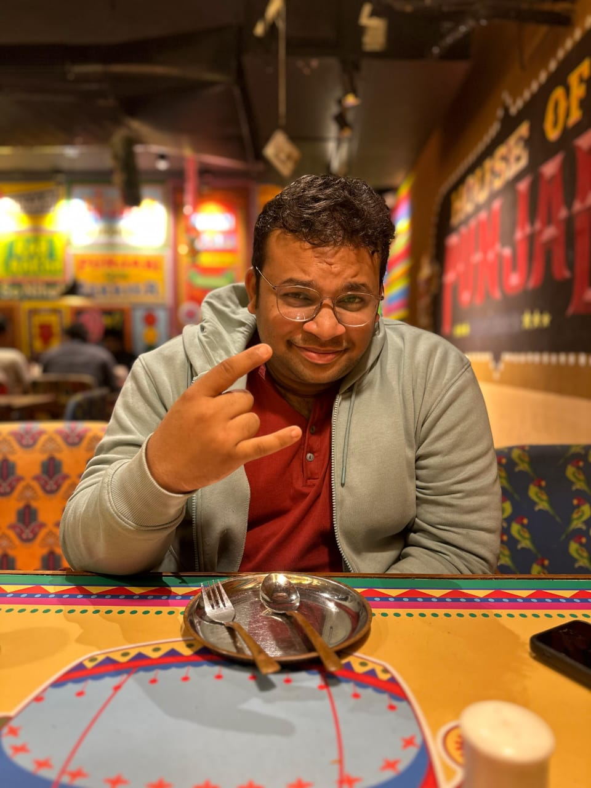

Evidence Synthesis
Systematic reviews and meta-analyses across gastroenterology, oncology, hepatology and acute pancreatitis.
PHYSICIAN · RESEARCHER · PHOTOGRAPHER
Building a career at the intersection of medicine, research, photography, education, innovation and a lot more.
Physician · Researcher · Educator · Photographer
01 · ABOUT


Hi, I’m Dr. Satwik Kuppili.
If I had to describe myself in a single sentence, I would probably say that I am a doctor who has never quite learned how to stay curious about only one thing.
Medicine is where my professional journey began, and it remains one of the most important parts of who I am. I trained as a physician in India and am currently pursuing the next stage of that journey through the USMLE pathway. But somewhere along the way, I realised that being a doctor was never going to be enough of an identity for me. I have always been interested in what exists beyond the boundaries of a textbook, a ward, or a conventional career path.
That curiosity eventually pulled me into research.
I became fascinated by the process of taking a question that doesn't have an obvious answer, breaking it down, searching through what is already known, challenging what isn't, and trying to add something meaningful to the conversation..
I have been fortunate to contribute to 20+ peer-reviewed publications, working across areas ranging from oncology and gastroenterology to infectious diseases, artificial intelligence in healthcare, genetics and rare diseases, and other clinically relevant questions. I have also spent considerable time working on systematic reviews and meta-analyses, learning not only how to interpret evidence, but how to question it.
What I enjoy most about research isn't the publication at the end.
The late-night literature searches. The ridiculous number of tabs open on a browser. Finding a paper that changes the direction of an entire project. Discovering that an apparently simple question is actually incredibly complicated. Arguing over a sentence in a manuscript because one word changes the meaning. And occasionally staring at a statistical output wondering why it has decided to ruin your day,well of course,looking at the published article gives a satisfaction nothing ever could.
I have also had the opportunity to take on roles in medical education, student organisations, research teams, and public-health initiatives. These experiences taught me something that medicine and research alone couldn't:
I found some of the best people in the entire world in this process.Someone who taught me a million things without making me feel dumb.People whom I consider to have changed the way of my life forever.My thought process,emotional maturity,the way I behave, I learnt every one of these from people I met in this journey.
I was once this naive guy from a village,trying to learn english with the help of youtube and Netflix.I am happy I met this bunch of people who helped put myself somewhere different from where I once was.
That is one of the reasons I enjoy mentorship and collaboration so much.
I am a wildlife photographer, or at least someone perpetually trying to become a better one.
Photography changed the way I look at the world. It taught me to slow down. To wait. To notice things that are easy to miss when you are moving too quickly. A bird sitting on a branch for three seconds, a particular expression on an animal's face, light falling through a forest at exactly the right moment
You cannot force them. You have to be there.
And perhaps that is what I like about photography most. Medicine has trained me to look for details because details matter. Photography has taught me that sometimes those details have nothing to do with a diagnosis, a laboratory value, or a clinical decision.
It reminds you that the world doesn't revolve around you.You are simply lucky enough to witness a small part of it.And sometimes, if you're patient enough, you get to take a photograph home.
Writing is a relatively new territory for me, but it is something I have wanted to explore for a long time.
I have always been fascinated by stories— We live 100 different lives,reading 100 different characters. I remember wanting to read Harry potter books once I watched the first film.My limitation with the English was a hiccup.I read Chetan Bhagath,Enid blyton first. Got good with vocabulary,saved money to buy a dictionary of my own and then borrowed the Harry Potter books.
This habit of reading made me feel so many things that probably would not be experienced in a single person's life.
Eventually, I started trying to write a story of my own.
My current writing journey has taken me into fiction, where I am building characters, relationships, settings. Maybe deep down,I like making my characters feel what I wanted to feel but couldn't. Make them say things I wished I did. Give them the kind of endings only a few in this world are lucky enough to have.
It is a completely different kind of writing from research.
There is no PubMed.There is no confidence interval.There is no systematic review to tell you whether your character should fall in love.You just have to make the reader believe it.
And I love that.
Writing has also taught me something unexpected: not everything needs to be solved. Some things simply need to be felt.
I have a slightly unhealthy relationship with films.
I don't just watch movies.I prepare for them.I can watch anything from a small local independent film to an enormous Hollywood franchise, and I will probably approach both with the same level of unnecessary dedication.
From where I come from, film watching is a cultural phenomena. You go to the theatre with confetti [ and this is normal]. We cheer with the crowd when the hero wins.We cry in the dark when the character you root for doesn't get it.
Before stepping into a theatre for certain films, I will have done the homework.
Previous films? Rewatched.Fan theories? Investigated.Character histories? Understood.
Random Reddit discussion from three years ago predicting the exact plot twist-I avoid these.They ruin the experience
I love the spectacle of commercial cinema, but I also love films that are quiet, strange, imperfect, intimate, or made with almost no budget.
For me, cinema isn't just entertainment.
It is storytelling, visual language, culture, psychology, music, technology and sometimes just a really good way to spend three hours.
And my most favourite part-is discussing the film while on the way to the film and the post cinema meal ,where the entire gang dissects aspects of film munching over food.
That may actually be the most accurate description of me.
There is a conventional version of a medical career: medical school, residency, specialization, academic work, and a fairly predictable progression from one stage to the next.
I respect that path.
But I have never been particularly good at limiting myself to one definition of what I should be.
I want to continue medicine.
I want to continue research.
I want to learn how to become a better physician and a better scientist.
I want to write better.
I want to take better photographs.
I want to travel more.
I want to make things.
I want to keep learning things
And I want to remain the kind of person who can become completely fascinated by something new and spend an unreasonable amount of time trying to understand it.
There is a common tendency to think that our interests need to fit neatly into categories.
Doctor.
Researcher.
Photographer.
Writer.
Film enthusiast.
I don't really see the need.
All of these things are different expressions of the same underlying trait:
curiosity.
Medicine taught me to ask what is happening?Research taught me to ask how do we know?
Photography taught me to ask what am I missing?Writing taught me to ask what does this person feel?And films constantly remind me to ask what story are we telling?
Perhaps that is what this website is really about.
Not a portfolio.Not a résumé.Not a list of achievements.
Just a place where the different parts of my life can exist together.
Some of it will be medicine.Some of it will be research.Some of it will be photographs of wildlife.Some of it will be writing.Some of it will inevitably be me talking far too seriously about a movie.
And there will probably be a few things here that I haven't discovered yet.
Because I'm still learning.
Still experimenting.
And, hopefully, still finding new things worth being curious about.
02 · RESEARCH
Systematic reviews and meta-analyses across gastroenterology, oncology, hepatology and acute pancreatitis.
Published and ongoing work spanning colorectal cancer, transplantation, COVID-19, CKD and medical education.
Research and educational initiatives focused on medical students, examinations, residency preparation and teaching.
Experience in ideathons, med-hackathons, AI simulation medicine and healthcare communication.
03 · PUBLICATIONS
Publication links can be added individually as DOI, PubMed or journal URLs.
04 · CONFERENCES
Each conference can have its own photographs, posters, certificates and presentation material.
05 · AWARDS & DISTINCTIONS
06 · EXPERIENCE
Public speaking · Education module design · Team management · Research paper writing and editing
Wildlife photography · Script writing · Kabaddi
07 · EXTRA CURRICULARS
The things I pursue outside clinical work — photography, writing, sports and everything else that keeps me curious.
08 · CONTACT